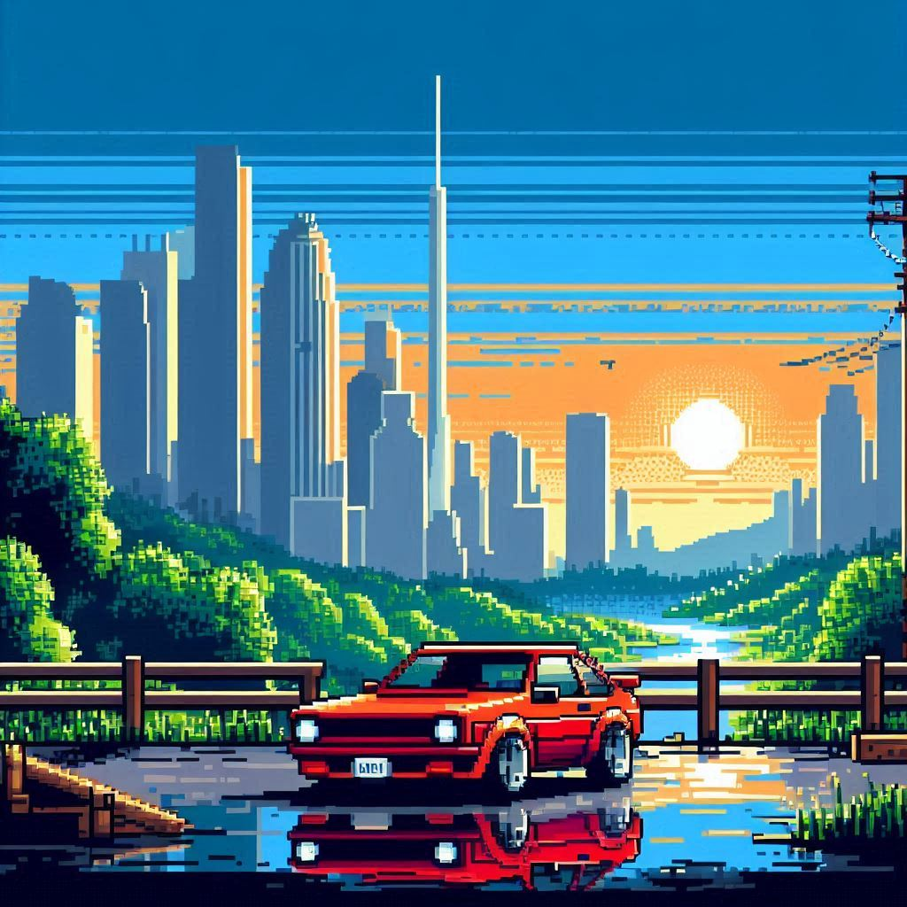
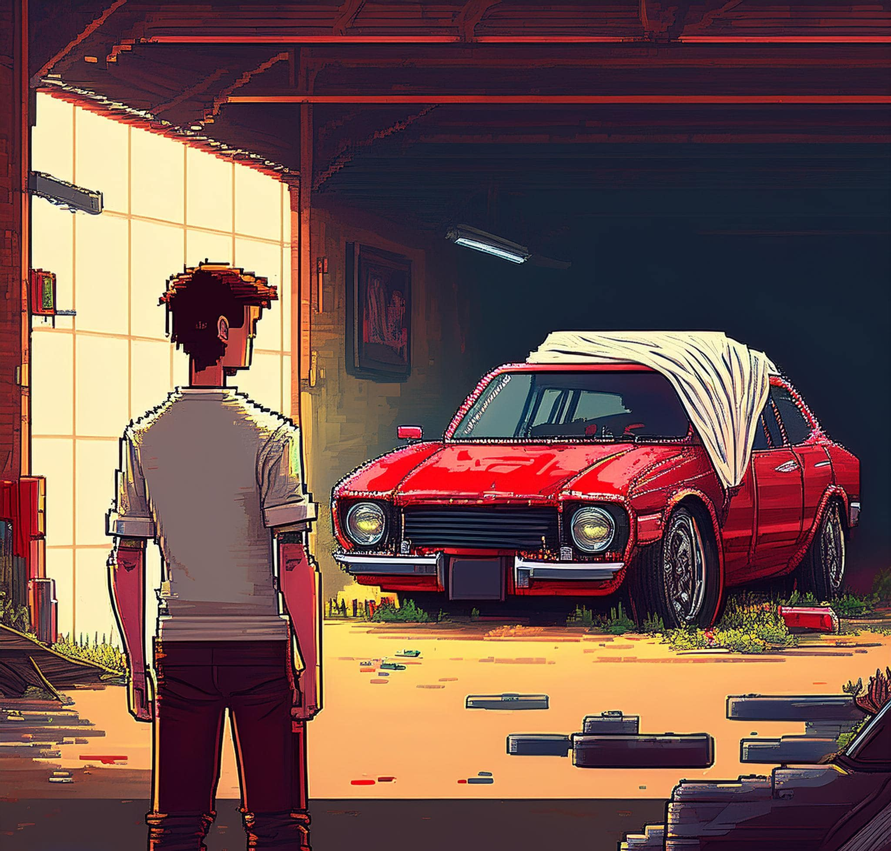

Seja Bem Vindo(a) a essa Aventura!!
A história de uma possível aventura automotiva. Um jovem explora a antiga casa de seu avô falecido, com a chave de uma garagem como sua última lembrança e uma preciosa herança. Com diferentes caminhos a se seguir e um horizonte à sua frente, a questão é... Você topa essa aventura?!
O INÍCIO DA JORNADA!!
Ao entrar na garagem de seu falecido avô, um jovem encontra um Ford Escort 1995 abandonado. O carro está sujo e velho, mas parece que com um conserto poderia voltar a rodar. Ele decide o que fazer.
O jovem decide consertar o carro. Com esforço e ao cair da noite, ele consegue colocá-lo em funcionamento. Agora, o carro está pronto para a estrada.
Com o carro em funcionamento, o jovem segue viagem e chega a uma encruzilhada. Ele precisa tomar uma decisão: virar à esquerda, onde o caminho parece levar à praia; virar à direita, que leva a uma trilha densa; ou continuar reto, com o caminho ficando cada vez mais perigoso.
Sem confiar no estado do carro, o jovem decide seguir viagem de ônibus. A aventura termina de forma pacata, mas ele sempre se pergunta o que teria acontecido se tivesse consertado o carro.
Seguindo pela esquerda, o jovem chega a uma praia deserta ao amanhecer. O som das ondas e a brisa do mar trazem uma sensação de paz. Ele estaciona o carro e aproveita o silêncio do local. Fim da aventura.
Escolhendo o caminho da direita, o jovem encontra uma cachoeira cristalina. Ele estaciona o carro perto da queda d'água e decide se banhar. O cenário é tranquilo e inspirador. Fim da aventura.
Ao seguir reto, o jovem perde o controle do carro em uma curva fechada. O Ford Escort capota e começa a pegar fogo. Infelizmente, ele não consegue escapar. Fim trágico da aventura.